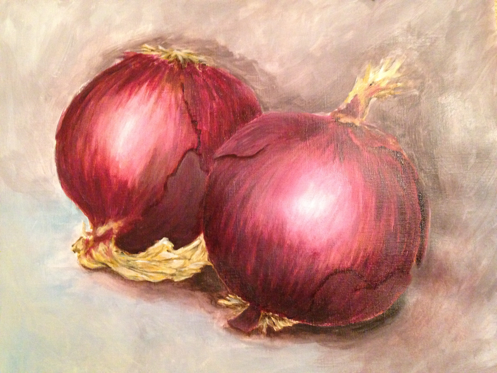

Portfolio
 YouTube
YouTube
Silence: Sound Art which challenges the idea that you do not have to always see it to know something is happening. Like the destruction of our plant/environment due to human interventions, the deaths of hundreds of species caused by climate change, a product of human destruction.

Toxic Invasion: A Meme inspired by my early work "Toxic Collision" where the narrative follows a bear fighting the invasion of human development.

Inspired by lyrics from Panic At The Disco's song, titled: Northern Downpour. This brings up, the issue of a materialistic society when challenged to give up material for real human connection.

IPhone Addiction: Inspired by George Hendrik Breitner's GIRL IN A RED KIMONO, this oil painting captures a study of the girls face as she sleeps. Wanting to bring this late 19th century image into the 21st century I painted an iphone in her hand, signaling the addiction we have to this seemingly small device.
 YouTube
YouTube
Transformation: Deals with the subject changing into something new. From tradtinal oil pastel and later being enhanced by new media techniques, such as photshop and video, the projects transformation by using new formating becomes the performance.
 YouTube
YouTube
Silent Still Video is a creation of the Ocean's Eleven scene where Danny Ocean and Rusty Ryan are recruiting Reuben. I wanted to use ink and watercolor to mimic a true storyboard with simple quick gestures.

Two Onions: A simple acrylic still life of two onions, capturing lighting and color.

There is an unspoken discourse between two ideas: the protection of the womb and the protection of Mother Nature. I wanted to merge these two battles together to make sense of an overall theme; which needs more protection?